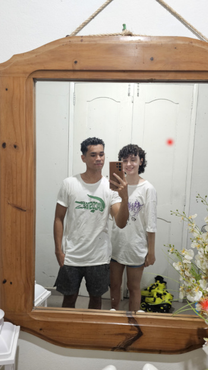
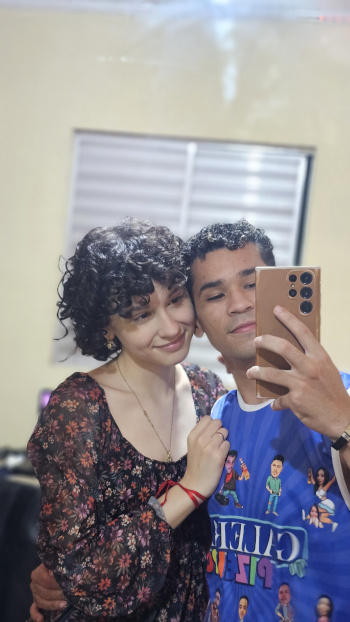
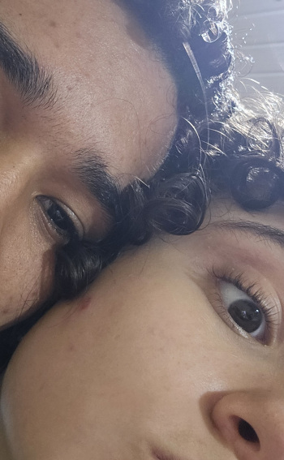
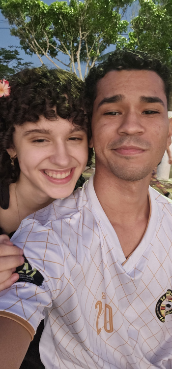
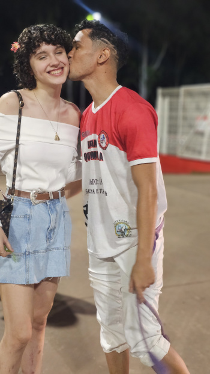
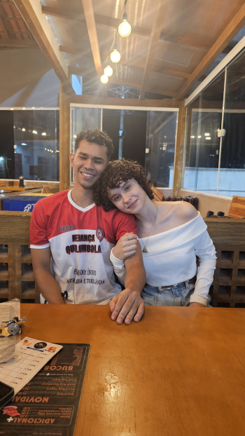
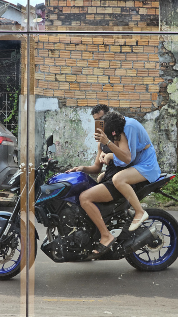
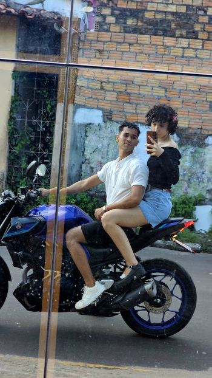
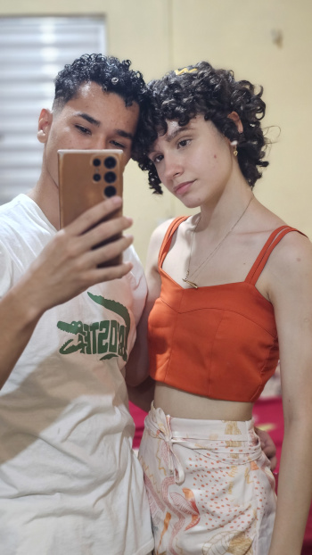
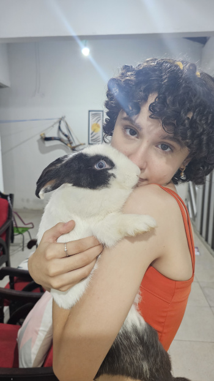

Essa aqui foi a primeira vez que a gente saiu, kkk. Você foi foragida da sua mãe pra rodoviária, kkk.
Esse dia aqui foi muito louco, kkk. Foi quando...
Ai, garota, esse jeito que você me olhava foi uma das coisas que mais me encantaram em você.
Esse foi nosso primeiro Date
. Lembro que a gente saiu só pra tomar um sorvete, kkk, e chegou lá estava maior clima de love.
Ai, ai... Nossa, eu fazendo esse negócio aqui estou me apaixonando de novo. Saca só que sorriso lindo!
Saudades das nossas loucuras.
Saudades do tempo que a gente passava junto.
Saudades das vezes que você me esperava lá na Beira-Rio.
Resumindo tudo: saudades de você!
Uma vez você colocou essa foto em preto e branco e deixou só eu colorido. Disse que eu deixava seu mundo assim, colorido.
Fiquei todo bobo, kkk, mas, na realidade, foi você que chegou e deixou meu mundo colorido. Em pouco tempo, você conseguiu ser alguém muito importante e que eu jamais irei esquecer.
Vou levar você pra sempre comigo.
Kkkk será que algum dia tinha alguém lá dentro olhando a gente tirar foto nesse espelho?
❤️
Nossa, como você é linda!
Ain, que fofinha! Sempre vou lembrar de você assim: fofa, meiga, simpática, uma menina muito doce.
❤️
EU TE AMO